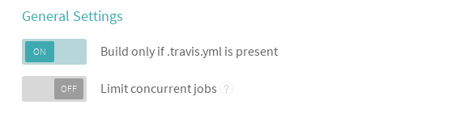

The prototev stack builds your GitHub managed Debian packages and publishes them into an apt repository.

Your packages are build in a clean and isolated environment to test on every update. This helps catch issues as early as possible and avoids having to run long package builds on one's own computers. Once your packages are built they are installable in a convenient way.
A bash script running on Travis CI detects which release of Debian or Ubuntu the branch is targeting based on the current branch name. When a tag is created the bash script selects the release according to the debian/changelog contents. The experimental suite and all varieties of backports are intelligently detected.
A throwaway Docker image is then created containing all the required build-dependencies. The package is then built in this isolated environment with no access to the internet. Lintian is run on the result and the binary packages are saved to the parent directory.
On successful builds the Bintray provider uploads the generated packages in the parent direction, and the package is added to your apt repository.
We assume that:
Enable builds for your package on TravisCI.
Ensure that you only build when '.travis.yml' is present.
Add the .travis.yml in your repository. The first part of the file should look like:
sudo: required services: - docker script: - wget -O- http://protodev.adaxisoft.be/script.sh | bash -
Add it to your package directory:
# either copy it from this page or download it wget -O.travis.yml http://travis.debian.net/travis.yml
"3.0 (quilt)" packages should ignore presence of .travis.yml extra file.
echo 'extend-diff-ignore = "^\.travis\.yml$"' >> debian/source/options
This gives TravisCI enough information to build the package but not enough to publish to Bintray.
Login into Bintray and copy your API key. You will find it under your profile settings.
Append the following snippet to your .travis.yml and take care to replace the user and key entries.
deploy:
provider: bintray
file: bintray-descriptor.json
user: "Bintray user"
key: "Bintray api key"
dry-run: false
on:
all_branches: true
It is recommended that you encrypt your api key. You can encrypt this key using the travis command line client and this command: (you must execute this command in the same directory as your .travis.yml)
travis encrypt BINTRAY-API-KEY --add deploy.key
At this point your package is ready. You can commit your .travis.yml file.
git add .travis.yml git commit -m "Add .travis.yml from Protodev project."
The last step is to create the Bintray apt repository. The repository should bear the name of the distribution:
Now every time you push your package it will be published in to Bintray.